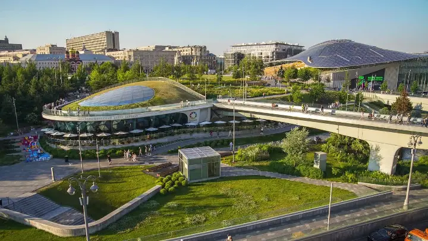
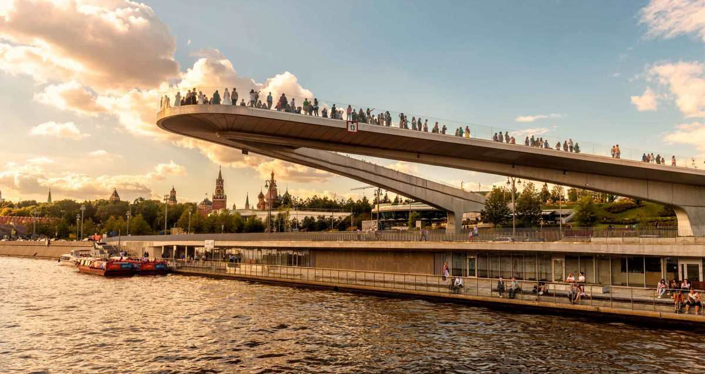

Зарядье: Современная Москва
Парк Зарядье — это уникальный проект, объединяющий природу, архитектуру и технологии. Расположенный рядом с Кремлём, он стал новой достопримечательностью Москвы.
Парк был открыт в 2017 году и включает зоны, представляющие разные природные ландшафты России: степь, тундру, лес и болота. Я гулял по парящему мосту, с которого открывается потрясающий вид на Кремль и Москву-реку.
В Зарядье также есть медиацентр, где можно узнать больше о природе и истории России, и концертный зал. Это место идеально для семейного отдыха.
Совет: Посетите парк весной или летом, чтобы насладиться цветущими растениями и открытыми террасами!